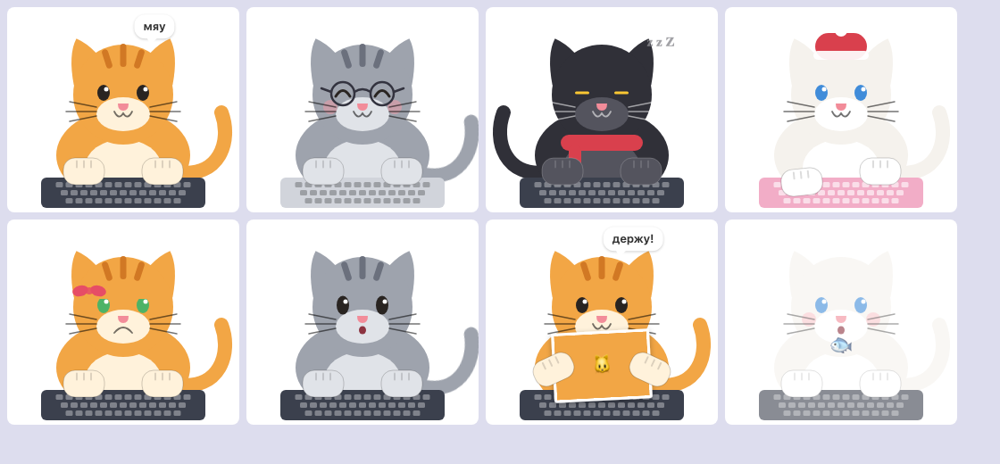
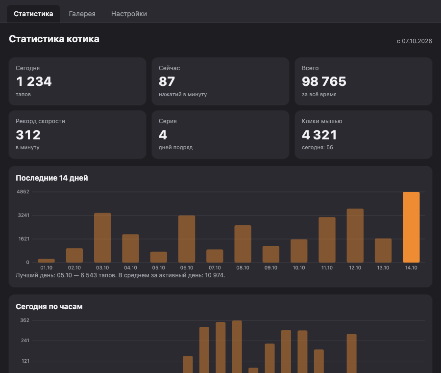

🐾 Open source · macOS · Windows · Linux
Cat Is Not Helper
Котик, который сидит поверх всех окон и тапает лапками вместе с тобой. Он не помогает. Он тапает.
Swift Rust Tauri 2 SwiftUI SVG релиз
GitHub Все релизыСкачать
Ссылки ведут на последний релиз на GitHub. Все сборки бесплатные и без регистрации.
Версия подставляется автоматически из последнего релиза.
macOS спросит «Универсальный доступ»: без него котик не видит нажатия в других приложениях. Сборки подписаны ad-hoc, поэтому при первом запуске правый клик по приложению → «Открыть», либо xattr -d com.apple.quarantine CatIsNotHelper.app. При первом скриншоте система попросит «Запись экрана».
Windows разрешений не требует. Установщик не подписан, SmartScreen покажет «Неизвестный издатель»: «Подробнее» → «Выполнить в любом случае».
Linux читает нажатия в сессии X11 (Xorg); в чистом Wayland это невозможно, котик скажет об этом сам. Установка: sudo dnf install ./CatIsNotHelper-*.rpm или sudo apt install ./CatIsNotHelper_*.deb.
Что умеет
Тапает в такт
Левая половина клавиатуры — левая лапа, правая — правая, клик мышью — тоже лапа. Считается только количество нажатий, не сами клавиши.
Живёт своей жизнью
Моргает, засыпает через две минуты тишины, радуется и виляет хвостом, ворчит, если его забыли, бросает фразы в пузырьке и празднует каждую тысячу тапов.
Статистика
Тапы за сегодня и за всё время, нажатий в минуту, рекорд скорости, серия дней подряд, графики за 14 дней и по часам.
Держит скриншоты
Выдели область экрана из меню, и котик возьмёт картинку в лапки. Перетащи на него любую картинку. Чтобы забрать, потяни картинку из лапок в Finder, проводник или чат.
Настраивается
Четыре окраса, цвет глаз, бантик, очки, шапка, шарф, цвет клавиатуры, зеркальное отражение, размер от 50% до 250%, прозрачность, автозапуск.
Обновляется сам
Пункт «Проверить обновления» в меню ставит новую версию там, где это возможно, иначе открывает страницу релиза. Статистика и настройки не теряются.
Скриншоты
Окрасы, аксессуары и настроения, а также окно статистики


Управление
| Клик по котику | погладить |
| Двойной клик | открыть то, что он держит |
| Потянуть за котика | передвинуть |
| Потянуть за картинку в лапках | забрать её (drag & drop наружу) |
| Перетащить картинку на котика | он возьмёт её в лапки |
| Правый клик | меню |
| Иконка 🐾 в меню-баре или трее | статистика, скриншот, галерея, размер, окрас, настройки, обновления |
Под капотом
В репозитории две реализации с одинаковым поведением и общими данными:
- Нативная macOS на SwiftUI и AppKit: прозрачная неактивирующаяся панель, глобальный монитор событий, SwiftPM без Xcode-проекта, универсальный бинарник arm64 + x86_64.
- Кросс-платформенная на Tauri 2: бэкенд на Rust (монитор ввода через rdev, захват экрана, трей, апдейтер с подписью minisign), интерфейс на обычном HTML/JS без сборщика, котик нарисован SVG в тех же координатах, что и в Swift.
CI на GitHub Actions собирает все платформы и публикует релиз по тегу. Приложение считает только количество нажатий и час, какие именно клавиши нажаты — не записывает и не отправляет.